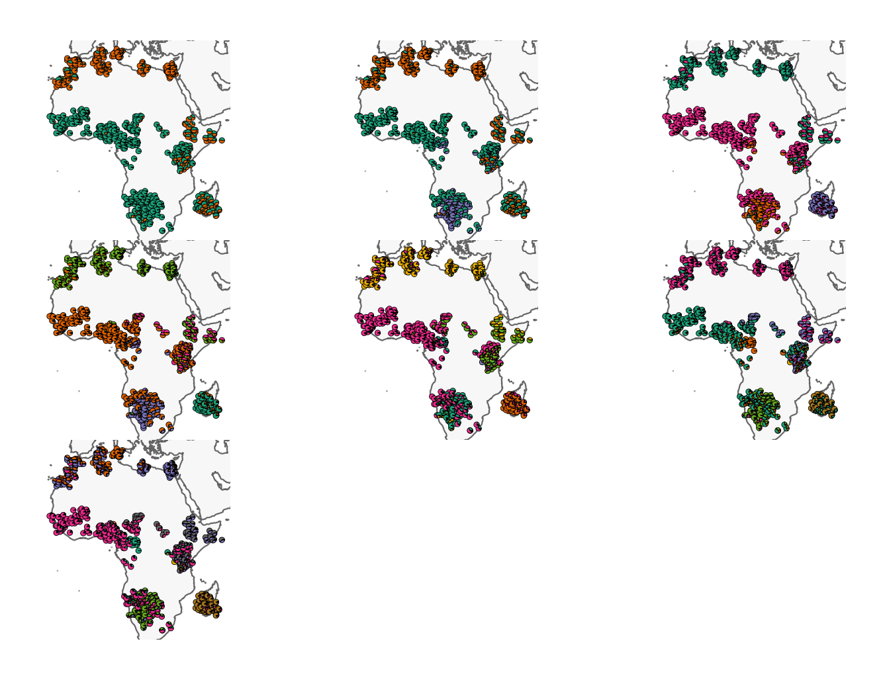
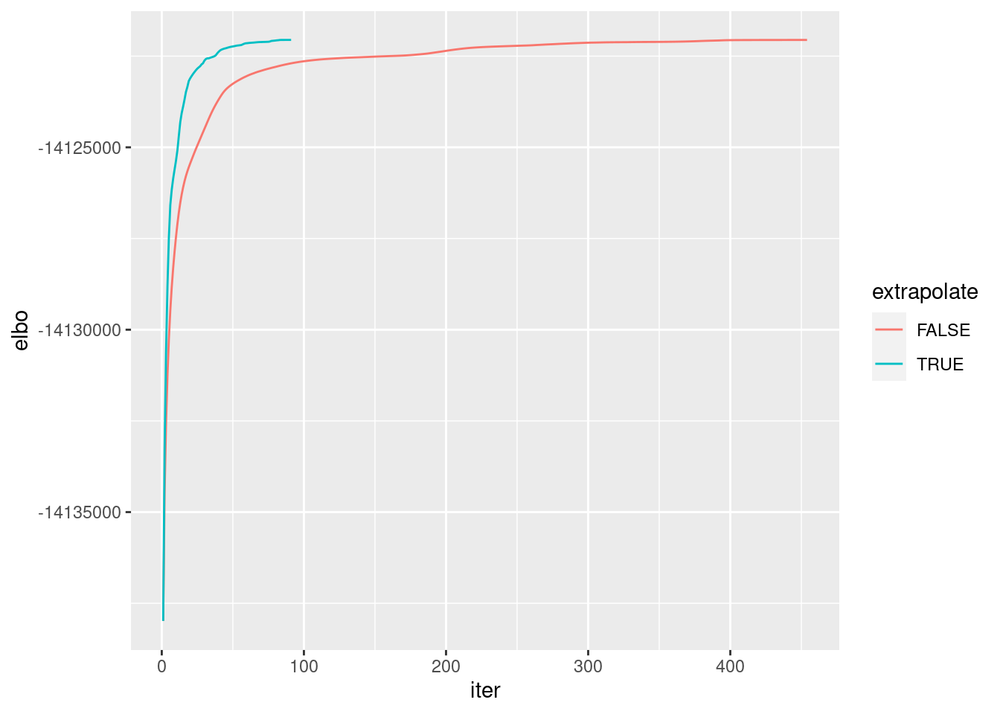

r1africa1nfb
Joseph Marcus
2020-06-22
Last updated: 2020-06-29
Checks: 6 1
Knit directory: drift-workflow/analysis/
This reproducible R Markdown analysis was created with workflowr (version 1.6.1). The Checks tab describes the reproducibility checks that were applied when the results were created. The Past versions tab lists the development history.
Great! Since the R Markdown file has been committed to the Git repository, you know the exact version of the code that produced these results.
Great job! The global environment was empty. Objects defined in the global environment can affect the analysis in your R Markdown file in unknown ways. For reproduciblity it’s best to always run the code in an empty environment.
The command set.seed(20190211) was run prior to running the code in the R Markdown file. Setting a seed ensures that any results that rely on randomness, e.g. subsampling or permutations, are reproducible.
Great job! Recording the operating system, R version, and package versions is critical for reproducibility.
- unnamed-chunk-3
- unnamed-chunk-4
- unnamed-chunk-5
To ensure reproducibility of the results, delete the cache directory r1africa1nfb_cache and re-run the analysis. To have workflowr automatically delete the cache directory prior to building the file, set delete_cache = TRUE when running wflow_build() or wflow_publish().
Great job! Using relative paths to the files within your workflowr project makes it easier to run your code on other machines.
Great! You are using Git for version control. Tracking code development and connecting the code version to the results is critical for reproducibility.
The results in this page were generated with repository version 4bf25c6. See the Past versions tab to see a history of the changes made to the R Markdown and HTML files.
Note that you need to be careful to ensure that all relevant files for the analysis have been committed to Git prior to generating the results (you can use wflow_publish or wflow_git_commit). workflowr only checks the R Markdown file, but you know if there are other scripts or data files that it depends on. Below is the status of the Git repository when the results were generated:
Ignored files:
Ignored: .snakemake/
Ignored: analysis/r1africa1nfb_cache/
Ignored: data/datasets/
Ignored: data/raw/
Ignored: data/simulations/
Ignored: notebooks/.ipynb_checkpoints/
Ignored: output/
Ignored: sandbox/.ipynb_checkpoints/
Note that any generated files, e.g. HTML, png, CSS, etc., are not included in this status report because it is ok for generated content to have uncommitted changes.
These are the previous versions of the repository in which changes were made to the R Markdown (analysis/r1africa1nfb.Rmd) and HTML (docs/r1africa1nfb.html) files. If you’ve configured a remote Git repository (see ?wflow_git_remote), click on the hyperlinks in the table below to view the files as they were in that past version.
| File | Version | Author | Date | Message |
|---|---|---|---|---|
| html | 3bd7c49 | Joseph Marcus | 2020-06-29 | Build site. |
| Rmd | 488e33c | Joseph Marcus | 2020-06-29 | workflowr::wflow_publish(“r1africa1nfb.Rmd”) |
| Rmd | 9fe7c59 | Joseph Marcus | 2020-06-25 | wolves and africa |
Here I analyze a genotyping array dataset (r1africa1nfb) of humans from Africa. This dataset was originally organized by Peter et al. 2020 which merged previously published datasets. r1africa1nfb has 749 individuals and 20724 SNPs.
Imports
Import the required libraries and scripts:
suppressMessages({
library(lfa)
library(flashier)
library(drift.alpha)
library(ggplot2)
library(RColorBrewer)
library(viridis)
library(reshape2)
library(tidyverse)
library(alstructure)
source("../code/structure_plot.R")
})Data
Here I read the data, remove SNPs that are too rare or common, and mean-impute missing data:
data_path <- "../data/datasets/r1africa1nfb/r1africa1nfb"
G <- t(lfa::read.bed(data_path))[1] "reading in 749 individuals"
[1] "reading in 20984 snps"
[1] "snp major mode"
[1] "reading snp 20000"colnames(G) <- NULL
rownames(G) <- NULL
n <- nrow(G)
daf <- colSums(G, na.rm=T) / (2 * n)
colors <- brewer.pal(8, "Set2")
# filter out too rare and too common SNPs
Y <- G[,((daf>=.05) & (daf <=.95))]
# mean impute
mu <- colMeans(Y, na.rm = TRUE)
for(j in 1:ncol(Y)){
Y[is.na(Y[,j]), j] <- mu[j]
}
coords <- read.table("../data/datasets/r1africa1nfb/r1africa1nfb.coord", header=F)
colnames(coords) <- c("Long", "Lat")
p <- ncol(Y)
print(n)[1] 749print(p)[1] 20724ADMIXTURE
Here I display ADMIXTURE plots from K=2 to K=8. I ran 5 replicates of ADMIXTURE for each K and then plot the one the achieves the highest likelihood among the replicates:

| Version | Author | Date |
|---|---|---|
| fdef1bb | Joseph Marcus | 2020-06-29 |
flash-greedy
Here I run the EBMF greedy algorithm:
Kmax <- 8
greedy <- init_from_data(Y, Kmax=Kmax)
# prepare
sd <- sqrt(greedy$prior_s2)
L <- greedy$EL
LDsqrt <- L %*% diag(sd)
s2 <- greedy$resid_s2
Kmax <- ncol(LDsqrt)
df <- cbind(coords, LDsqrt)
gath_df <- df %>%
gather(K, value, -Lat, -Long) %>%
filter(K!=1)
# plot
jit <- 2
buf <- 5
p <- ggplot() +
geom_path(data=map_data("world"),
aes(long, lat, group=group),
color="gray", size=0.25) +
geom_jitter(data=gath_df,
aes(Long, Lat, color=value),
width=jit, height=jit, shape=21) +
scale_color_viridis() +
coord_map() +
facet_wrap(.~factor(K, levels = paste0(2:Kmax)), ncol=3, nrow=3) +
theme_void() +
xlim(min(df$Long)-buf, max(df$Long)+buf) +
ylim(min(df$Lat)-buf, max(df$Lat)+buf)
p
Warning: The above code chunk cached its results, but it won’t be re-run if previous chunks it depends on are updated. If you need to use caching, it is highly recommended to also set knitr::opts_chunk$set(autodep = TRUE) at the top of the file (in a chunk that is not cached). Alternatively, you can customize the option dependson for each individual chunk that is cached. Using either autodep or dependson will remove this warning. See the knitr cache options for more details.
drift (no-extrapolation)
Here I run drift with no extrapolation and initialized from the greedy fit:
dr_slow <- drift(greedy,
verbose=FALSE,
extrapolate=FALSE,
maxiter=2000,
tol=1e-4)
# prepare
sd <- sqrt(dr_slow$prior_s2)
L <- dr_slow$EL
LDsqrt <- L %*% diag(sd)
s2 <- dr_slow$resid_s2
Kmax <- ncol(LDsqrt)
df <- cbind(coords, LDsqrt)
gath_df <- df %>%
gather(K, value, -Lat, -Long) %>%
filter(K!=1)
# plot
p <- ggplot() +
geom_path(data=map_data("world"),
aes(long, lat, group=group),
color="gray", size=0.25) +
geom_jitter(data=gath_df,
aes(Long, Lat, color=value),
width=jit, height=jit, shape=21) +
scale_color_viridis() +
coord_map() +
facet_wrap(.~factor(K, levels = paste0(2:Kmax)), ncol=3, nrow=3) +
theme_void() +
xlim(min(df$Long)-buf, max(df$Long)+buf) +
ylim(min(df$Lat)-buf, max(df$Lat)+buf)
p
Warning: The above code chunk cached its results, but it won’t be re-run if previous chunks it depends on are updated. If you need to use caching, it is highly recommended to also set knitr::opts_chunk$set(autodep = TRUE) at the top of the file (in a chunk that is not cached). Alternatively, you can customize the option dependson for each individual chunk that is cached. Using either autodep or dependson will remove this warning. See the knitr cache options for more details.
drift (extrapolation)
Here I run drift with extrapolation and initialized from the same greedy fit:
dr_fast <- drift(greedy,
verbose=FALSE,
extrapolate=TRUE,
maxiter=2000,
tol=1e-4)
# prepare
sd <- sqrt(dr_fast$prior_s2)
L <- dr_fast$EL
LDsqrt <- L %*% diag(sd)
s2 <- dr_fast$resid_s2
Kmax <- ncol(LDsqrt)
df <- cbind(coords, LDsqrt)
gath_df <- df %>%
gather(K, value, -Lat, -Long) %>%
filter(K!=1)
# plot
p <- ggplot() +
geom_path(data=map_data("world"),
aes(long, lat, group=group),
color="gray", size=0.25) +
geom_jitter(data=gath_df,
aes(Long, Lat, color=value),
width=jit, height=jit, shape=21) +
scale_color_viridis() +
coord_map() +
facet_wrap(.~factor(K, levels = paste0(2:Kmax)), ncol=3, nrow=3) +
theme_void() +
xlim(min(df$Long)-buf, max(df$Long)+buf) +
ylim(min(df$Lat)-buf, max(df$Lat)+buf)
p
Warning: The above code chunk cached its results, but it won’t be re-run if previous chunks it depends on are updated. If you need to use caching, it is highly recommended to also set knitr::opts_chunk$set(autodep = TRUE) at the top of the file (in a chunk that is not cached). Alternatively, you can customize the option dependson for each individual chunk that is cached. Using either autodep or dependson will remove this warning. See the knitr cache options for more details.
Compare no-extrapolation vs extrapolation ELBOs:
d <- dr_slow$iterations %>%
mutate(extrapolate = "FALSE") %>%
bind_rows(dr_fast$iterations %>% mutate(extrapolate = "TRUE"))
ggplot(d, aes(x = iter, y = elbo, col = extrapolate)) + geom_line()
| Version | Author | Date |
|---|---|---|
| 3bd7c49 | Joseph Marcus | 2020-06-29 |
It seems the extrapolation and no-extrapolation algorithms find similar solutions with similar quality but extrapolation finds it faster.
sessionInfo()R version 3.5.1 (2018-07-02)
Platform: x86_64-pc-linux-gnu (64-bit)
Running under: Scientific Linux 7.4 (Nitrogen)
Matrix products: default
BLAS/LAPACK: /software/openblas-0.2.19-el7-x86_64/lib/libopenblas_haswellp-r0.2.19.so
locale:
[1] LC_CTYPE=en_US.UTF-8 LC_NUMERIC=C
[3] LC_TIME=en_US.UTF-8 LC_COLLATE=en_US.UTF-8
[5] LC_MONETARY=en_US.UTF-8 LC_MESSAGES=en_US.UTF-8
[7] LC_PAPER=en_US.UTF-8 LC_NAME=C
[9] LC_ADDRESS=C LC_TELEPHONE=C
[11] LC_MEASUREMENT=en_US.UTF-8 LC_IDENTIFICATION=C
attached base packages:
[1] stats graphics grDevices utils datasets methods base
other attached packages:
[1] alstructure_0.1.0 forcats_0.5.0 stringr_1.4.0
[4] dplyr_0.8.5 purrr_0.3.4 readr_1.3.1
[7] tidyr_1.0.2 tibble_3.0.1 tidyverse_1.3.0
[10] reshape2_1.4.3 viridis_0.5.1 viridisLite_0.3.0
[13] RColorBrewer_1.1-2 ggplot2_3.3.0 drift.alpha_0.0.9
[16] flashier_0.2.4 lfa_1.9.0
loaded via a namespace (and not attached):
[1] httr_1.4.1 jsonlite_1.6 modelr_0.1.6 assertthat_0.2.1
[5] mixsqp_0.3-43 cellranger_1.1.0 yaml_2.2.0 ebnm_0.1-24
[9] pillar_1.4.3 backports_1.1.6 lattice_0.20-38 glue_1.4.0
[13] digest_0.6.25 promises_1.0.1 rvest_0.3.5 colorspace_1.4-1
[17] htmltools_0.3.6 httpuv_1.4.5 Matrix_1.2-15 plyr_1.8.4
[21] pkgconfig_2.0.3 invgamma_1.1 broom_0.5.6 haven_2.2.0
[25] corpcor_1.6.9 scales_1.1.0 whisker_0.3-2 later_0.7.5
[29] git2r_0.26.1 farver_2.0.3 generics_0.0.2 ellipsis_0.3.0
[33] withr_2.2.0 ashr_2.2-50 cli_2.0.2 magrittr_1.5
[37] crayon_1.3.4 readxl_1.3.1 evaluate_0.14 fansi_0.4.1
[41] fs_1.3.1 nlme_3.1-137 xml2_1.3.2 truncnorm_1.0-8
[45] tools_3.5.1 hms_0.5.3 lifecycle_0.2.0 munsell_0.5.0
[49] reprex_0.3.0 irlba_2.3.3 compiler_3.5.1 rlang_0.4.5
[53] grid_3.5.1 rstudioapi_0.11 labeling_0.3 rmarkdown_1.10
[57] gtable_0.3.0 DBI_1.0.0 R6_2.4.1 gridExtra_2.3
[61] lubridate_1.7.4 knitr_1.20 workflowr_1.6.1 rprojroot_1.3-2
[65] stringi_1.4.6 parallel_3.5.1 SQUAREM_2020.2 Rcpp_1.0.4.6
[69] vctrs_0.2.4 dbplyr_1.4.3 tidyselect_1.0.0